Matbiips example: Stochastic kinetic predator-prey model
Reference: R.J. Boys, D.J. Wilkinson and T.B.L. Kirkwood. Bayesian inference for a discretely observed stochastic kinetic model. Statistics and Computing (2008) 18:125-135.
Contents
Statistical model
The continuous-time Lotka-Volterra Markov jump process describes the evolution of two species 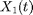 (prey) and 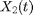 (predator) at time 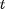. Let 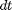 be an infinitesimal interval. The process evolves as
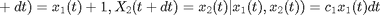
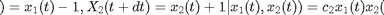
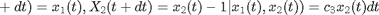
where 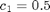, 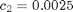 and 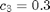.
Forward simulation can be done using the Gillespie algorithm. We additionally assume that we observe at some time 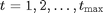 the number of preys with some noise
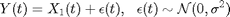
Statistical model in BUGS language
Content of the file 'stoch_kinetic_gill.bug':
model_file = 'stoch_kinetic_gill.bug'; % BUGS model filename type(model_file);
# Stochastic kinetic predator-prey model
# cf Boys, Wilkinson and Kirkwood
# Bayesian inference for a discretely observed stochastic kinetic model
var x_true[2,t_max], x[2,t_max], y[t_max], c[3]
data
{
x_true[,1] ~ LV(x_init,c[1],c[2],c[3],1)
y[1] ~ dnorm(x_true[1,1], 1/sigma^2)
for (t in 2:t_max)
{
x_true[1:2, t] ~ LV(x_true[1:2,t-1],c[1],c[2],c[3],1)
y[t] ~ dnorm(x_true[1,t], 1/sigma^2)
}
}
model
{
x[,1] ~ LV(x_init,c[1],c[2],c[3],1)
y[1] ~ dnorm(x[1,1], 1/sigma^2)
for (t in 2:t_max)
{
x[,t] ~ LV(x[,t-1],c[1],c[2],c[3],1)
y[t] ~ dnorm(x[1,t], 1/sigma^2)
}
}
User-defined Matlab functions
Content of the Matlab file 'lotka_volterra_gillepsie.m':
type('lotka_volterra_gillespie.m');
function x = lotka_volterra_gillespie(x, c1, c2, c3, dt)
% Simulation from a Lotka-Volterra model with the Gillepsie algorithm
% x1 is the number of prey
% x2 is the number of predator
% R1: (x1,x2) -> (x1+1,x2) At rate c1x1
% R2: (x1,x2) -> (x1-1,x2+1) At rate c2x1x2
% R3: (x1,x2) -> (x1,x2-1) At rate c3xx2
z = [1, -1, 0;
0, 1, -1];
t = 0;
while true
rate = [c1*x(1), c2*x(1)*x(2), c3*x(2)];
sum_rate = sum(rate);
t = t - log(rand)/sum_rate; % Sample next event from an exponential distribution
ind = find((sum_rate*rand)<=cumsum(rate), 1); % Sample the type of event
if t>dt
break
end
x = x + z(:, ind);
end
Content of the Matlab file 'lotka_volterra_dim.m':
type('lotka_volterra_dim.m');
function out_dim = f_dim(x_dim, c1_dim, c2_dim, c3_dim, dt_dim) out_dim = [2,1];
Installation of Matbiips
- Download the latest version of Matbiips
- Unzip the archive in some folder
- Add the Matbiips folder to the Matlab search path
matbiips_path = '../../matbiips';
addpath(matbiips_path)
General settings
set(0, 'DefaultAxesFontsize', 16); set(0, 'Defaultlinelinewidth', 2); set(0, 'DefaultLineMarkerSize', 8); light_blue = [.7, .7, 1]; light_red = [1, .7, .7]; dark_blue = [0, 0, .5]; dark_red = [.5, 0, 0]; % Set the random numbers generator seed for reproducibility if isoctave() || verLessThan('matlab', '7.12') rand('state', 0) else rng('default') end
Add new sampler to Biips
Add the user-defined function 'LV' to simulate from the Lotka-Volterra model
fun_bugs = 'LV'; fun_nb_inputs = 5; fun_dim = 'lotka_volterra_dim'; fun_sample = 'lotka_volterra_gillespie'; biips_add_distribution(fun_bugs, fun_nb_inputs, fun_dim, fun_sample);
* Added distribution 'LV'
Load model and data
Model parameters
t_max = 40; x_init = [100; 100]; c = [.5, .0025, .3]; sigma = 10; data = struct('t_max', t_max, 'c', c, 'x_init', x_init, 'sigma', sigma);
Compile BUGS model and sample data
sample_data = true; % Boolean model = biips_model(model_file, data, 'sample_data', sample_data); % Create Biips model and sample data data = model.data;
* Parsing model in: stoch_kinetic_gill.bug * Compiling data graph Declaring variables Resolving undeclared variables Allocating nodes Graph size: 131 Sampling data Reading data back into data table * Compiling model graph Declaring variables Resolving undeclared variables Allocating nodes Graph size: 132
Plot data
figure('name', 'Data') plot(1:t_max, data.x_true(1,:)) hold on plot(1:t_max, data.x_true(2,:), 'r') plot(1:t_max, data.y, 'g*') xlabel('Time') ylabel('Number of individuals') legend('Prey', 'Predator', 'Measurements') legend boxoff box off ylim([0, 450]) saveas(gca, 'kinetic_data', 'epsc2') saveas(gca, 'kinetic_data', 'png')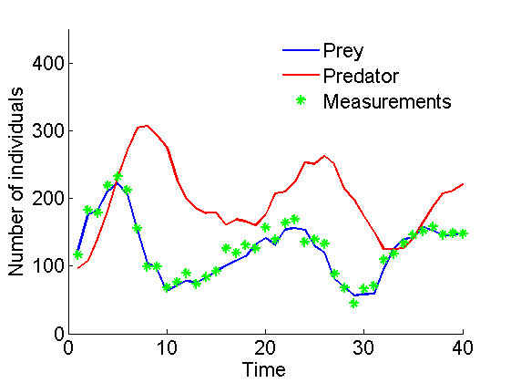
Biips Sequential Monte Carlo algorithm
Run SMC
n_part = 10000; % Number of particles variables = {'x'}; % Variables to be monitored out_smc = biips_smc_samples(model, variables, n_part, 'type', 'fs'); summ_smc = biips_summary(out_smc, 'probs', [.025, .975]);
* Assigning node samplers * Running SMC forward sampler with 10000 particles |--------------------------------------------------| 100% |**************************************************| 40 iterations in 394.67 s
Smoothing ESS
figure('name', 'SMC: SESS') semilogy(1:t_max, out_smc.x.s.ess(1,:)) hold on plot(1:t_max, 30*ones(t_max, 1), 'k--') xlabel('Time') ylabel('SESS') box off ylim([10, n_part]) saveas(gca, 'kinetic_sess', 'epsc2') saveas(gca, 'kinetic_sess', 'png')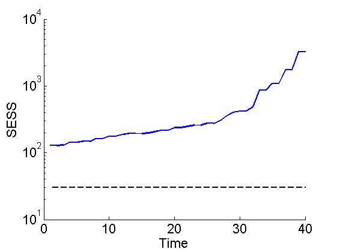
Posterior mean and quantiles for x
figure('name', 'SMC: Posterior mean and quantiles') x_smc_mean = summ_smc.x.s.mean; x_smc_quant = summ_smc.x.s.quant; h = fill([1:t_max, t_max:-1:1], [x_smc_quant{1}(1,:), fliplr(x_smc_quant{2}(1,:))], 0); set(h, 'edgecolor', 'none', 'facecolor', light_blue) hold on plot(1:t_max, x_smc_mean(1, :), 'linewidth', 3) plot(1:t_max, data.x_true(1,:), '--', 'color', dark_blue) h = fill([1:t_max, t_max:-1:1], [x_smc_quant{1}(2,:), fliplr(x_smc_quant{2}(2,:))], 0); set(h, 'edgecolor', 'none', 'facecolor', light_red) plot(1:t_max, x_smc_mean(2, :), 'r', 'linewidth', 3) plot(1:t_max, data.x_true(2,:), '--', 'color', dark_red) xlabel('Time') ylabel('Number of individuals') ylim([0, 450]) legend({'95% credible interval (prey)', 'SMC mean estimate (prey)', 'True number of preys',... '95% credible interval (predator)', 'SMC mean estimate (predator)',... 'True number of predators'}) legend boxoff box off saveas(gca, 'kinetic_smc', 'epsc2') saveas(gca, 'kinetic_smc', 'png')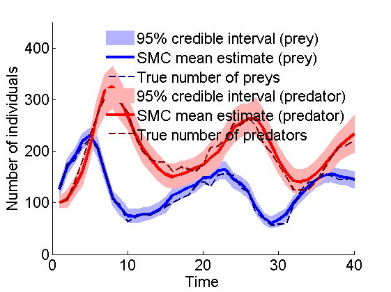
Clear model
biips_clear(model)